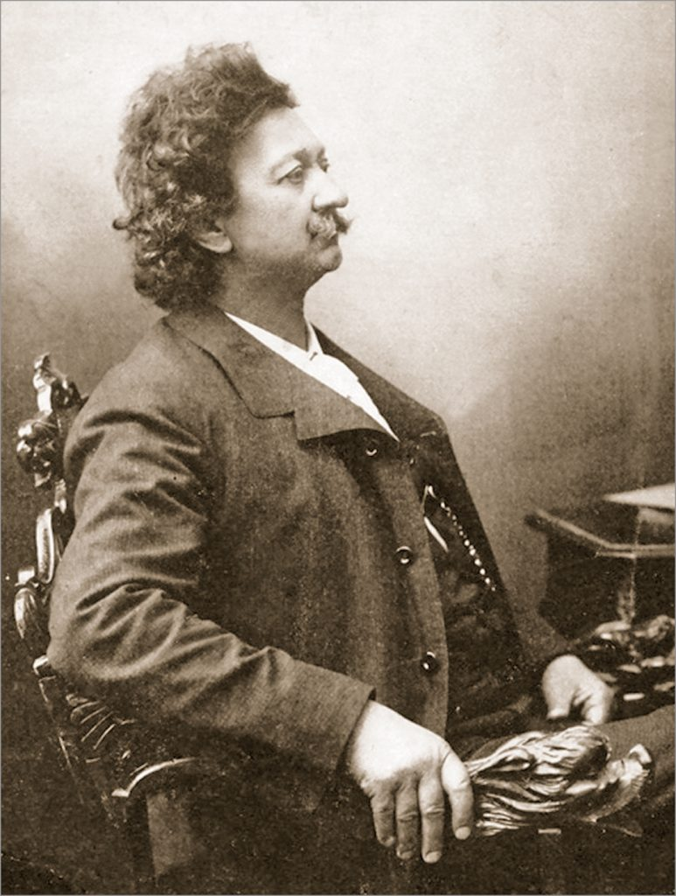
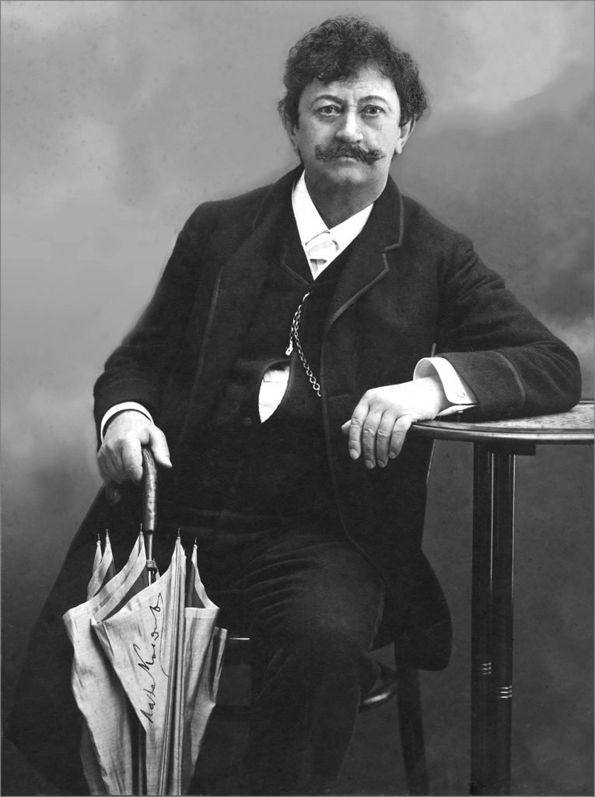

Биографија
Лазар Лаза Костић (Ковиљ, 31. јануар / 12. фебруар 1841 — Беч, 26. новембар 1910) био је српски ерудита. Бавио се књижевношћу (поезијом и прозом), правним наукама, новинарством и естетиком. По образовању је био доктор правних наука. Као политички човек и јавни радник Костић је вршио снажан утицај на српско друштво свога времена. Он је један од оснивача и вођа „Уједињене омладине“,
Фотографије
 Песме
U po noći preveseljke,
sa netrenke terevenke,
zagrejan se digoh doma.
Na ulici nema sveta,
samo što po snegu šeta
jedna moma...
U po noći preveseljke,
sa netrenke terevenke,
zagrejan se digoh doma.
Na ulici nema sveta,
samo što po snegu šeta
jedna moma.
Занимљивости
- Poliglota i genije – Govorio je više evropskih jezika i bio izuzetno obrazovan. Smatra se jednim od najinteligentnijih Srba svog vremena.
- Ljubav prema Lenki Dunđerski – Njegova tragična i neostvarena ljubav prema mladoj Lenki inspirisala je njegovu najpoznatiju pesmu „Santa Maria della Salute“.
- Pisao u zatvoru – Zbog političkih stavova bio je više puta zatvaran, a deo svojih dela napisao je upravo u zatvoru.
- Borac za srpski jezik – Bio je jedan od boraca za ukidanje veštačkog „slavenoserpskog“ jezika i zalagao se za Vukovu reformu jezika.
- Svestran umetnik – Osim poezije, pisao je drame, eseje, prevodio Šekspira i bavio se filozofijom.